Work
-
CoinbaseSummer 2027Incoming intern, Sales, Trading & Prime
Earned the offer by placing in the top 20 of the Institutional Client Strategy Challenge.
-
Mangrove AI2026 – nowResearch and product analyst
I write four to six research pieces a month, built the company's Discord community from an empty server, and wrote a Python tool that found 26 issues in the trading API.
-
Cipher Chain Capital2026 – nowResearch writer
Long-form research on self-custody, how DeFi exploits spread from one protocol to the next, and what the CLARITY Act means for custody.
-
GEODIS LogisticsSummer 2025Operations intern
Found two bottlenecks across three warehouse shifts, saving $34,000 a year in labor.
On campus
-
Vanderbilt Blockchain2024 – nowHead of marketing
Brought in Coinbase, Gemini, Jupiter, and Bitcoin Park for career events, and write a weekly policy newsletter for 450+ students and alumni.
-
AnchorDAO2024 – nowResearch analyst, Vanderbilt chapter
Our student fund finished first of 17 university chapters in 2025–26, up about 52% measured in ETH.
-
Stand With Crypto Alliance2025 – nowCollege representative
Vanderbilt's link to the national network. Ran four policy events for 160+ students.
Projects and writing
-
AtlasWatch2026Live global survey map
A live world map that tracks maritime security, natural hazards, and activity in space in one place, with shipping chokepoints marked and a running ticker of oil prices and seismic readings.
-
Medium2025 – nowIndependent writing, published through Coinmonks
20+ articles on tokenized real-world assets, custody design, oracles, privacy protocols, prediction markets, and Bitcoin's drawdown cycles.
Lately
I just got back from Iceland, where I spent fall break on Geological Filmmaking, a Vanderbilt travel course on filming the landscape and the geology that shaped it.
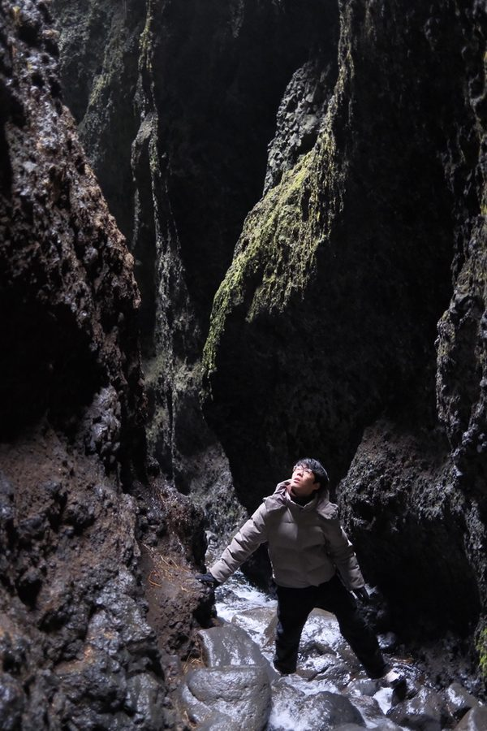
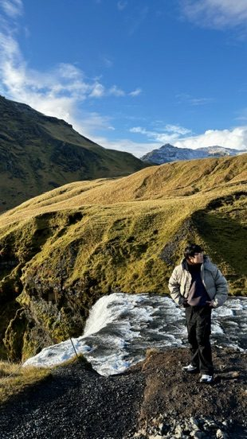
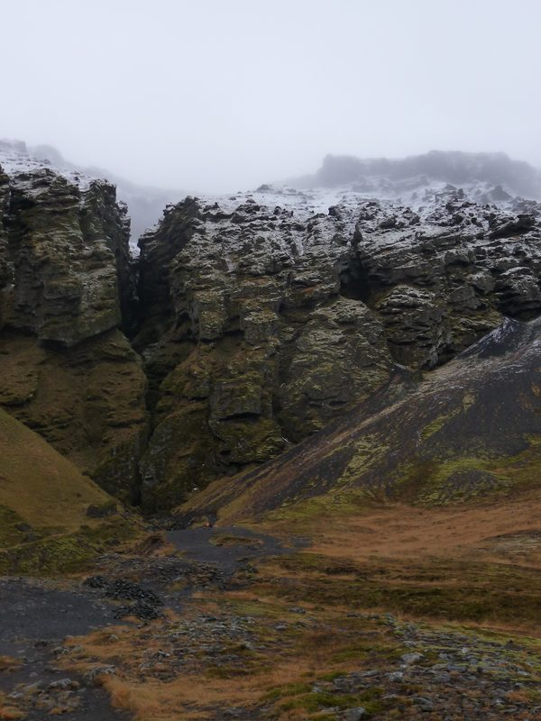
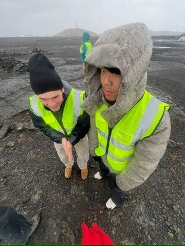
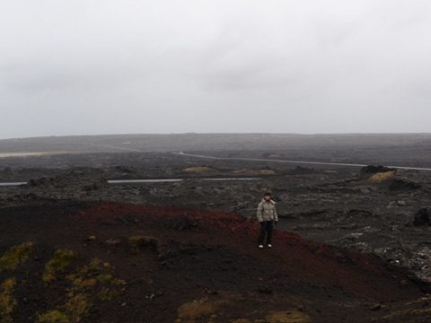
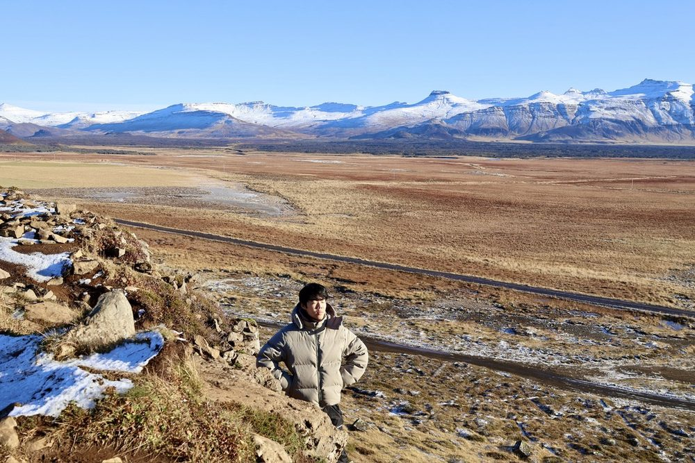
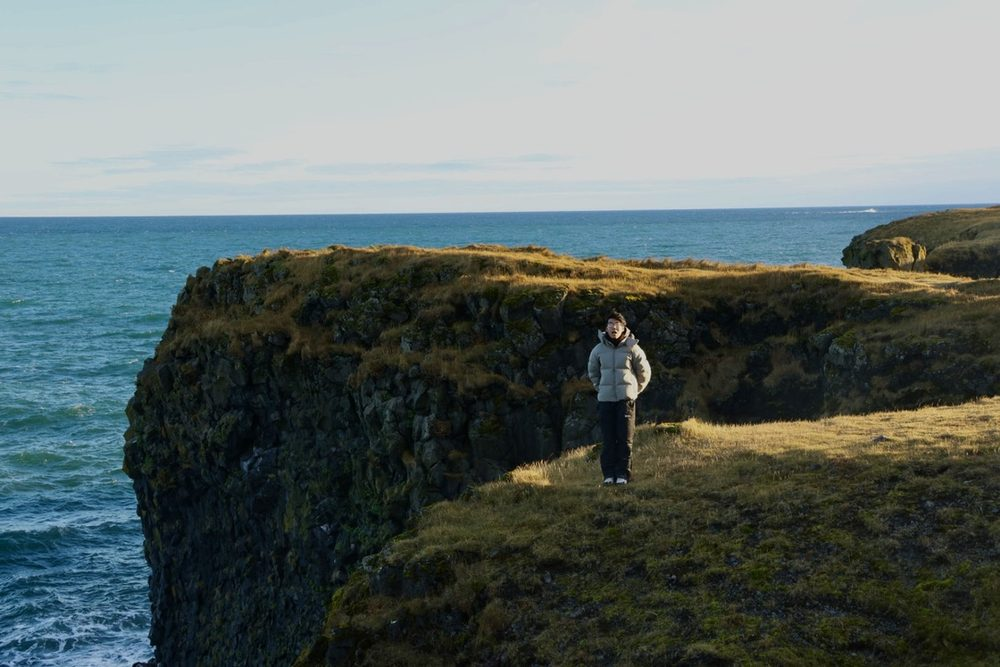
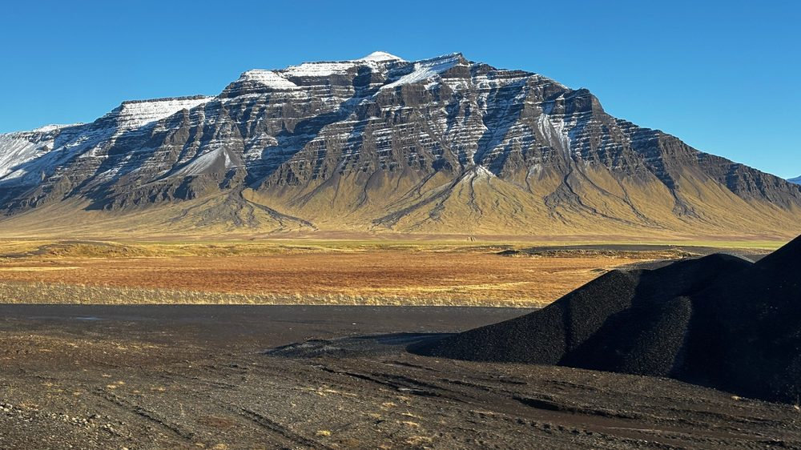
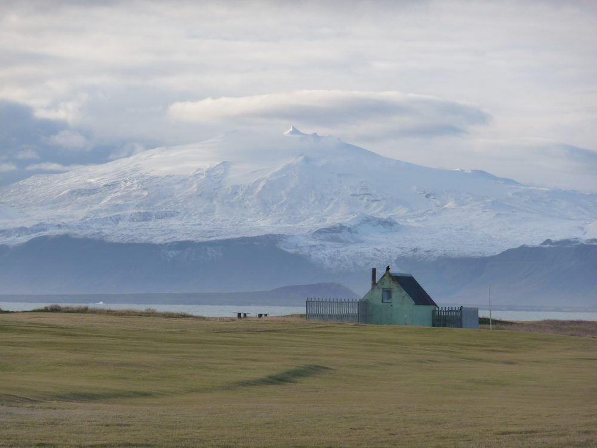
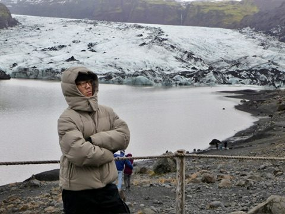
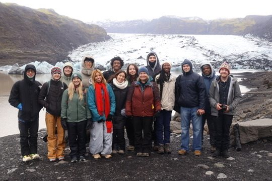
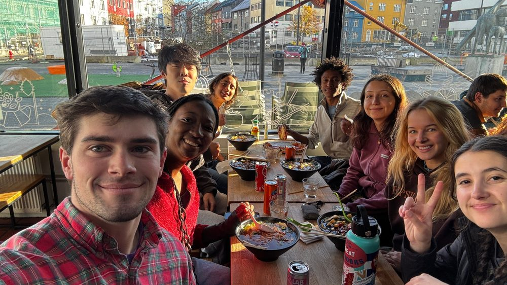
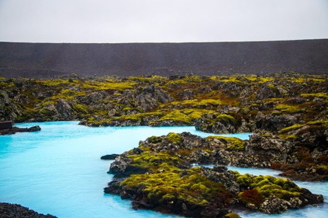
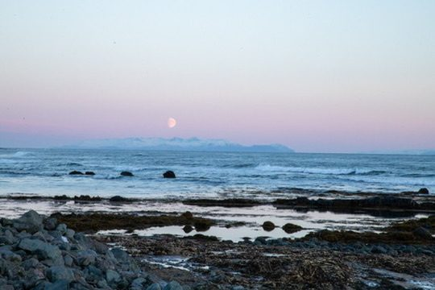
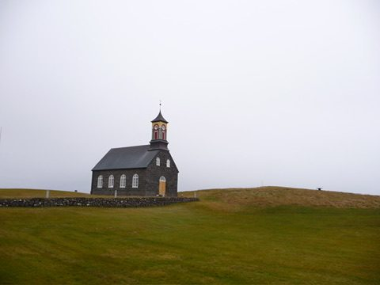
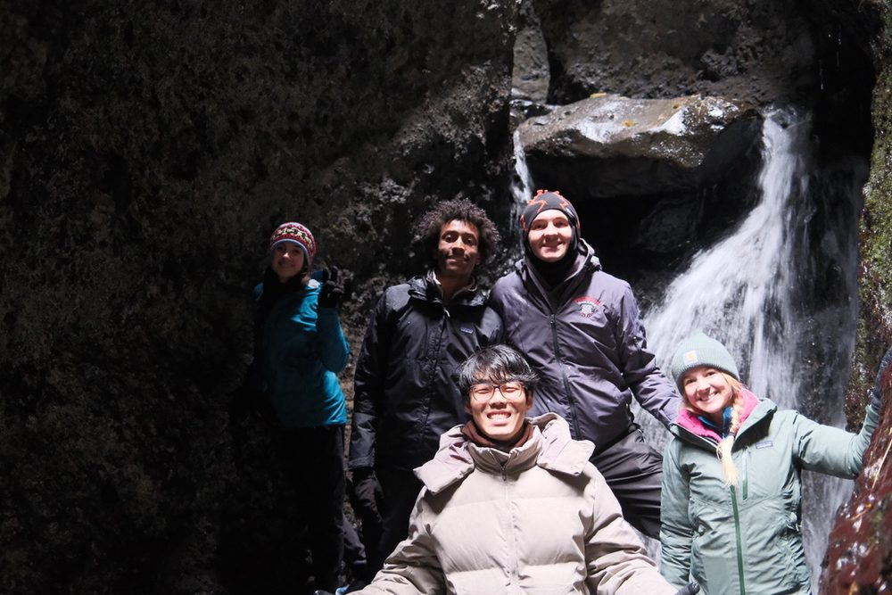
Outside of work
F1
I watch every race weekend. The outline above is the Baku City Circuit, one of my favorite tracks.
Volleyball
I play middle blocker. Anytime volleyball comes up on campus, I'm there.
Maps
I walked my whole high school with a 360 camera and published it to Google Street View.
Asian food
Ramen, tofu, and street food, anywhere I travel.
Mandarin and Japanese
Mandarin at home with my parents, and two years of Japanese with a tutor, helped along by a lot of anime.
Building with AI
Side projects, research tools, and this website, mostly built in conversation with Claude.